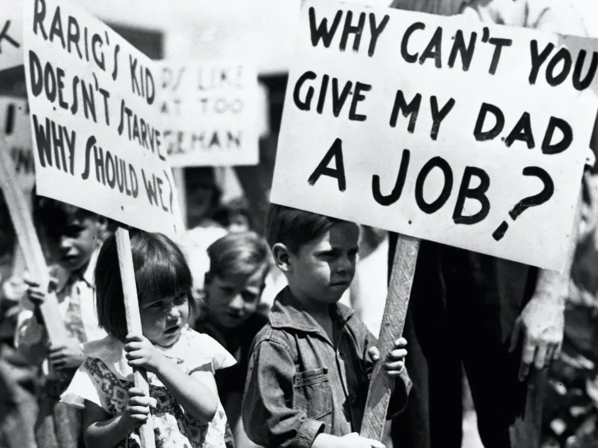

<!DOCTYPE html>
<html lang="en">
  <head>
    <meta charset="utf-8" />
    <meta name="viewport" content="width=device-width, initial-scale=1.0, maximum-scale=1.0, user-scalable=no" />

    <title></title>
    <link rel="stylesheet" href="dist/reveal.css" />
    <link rel="stylesheet" href="css/stefano.css" id="theme" />
    <link rel="stylesheet" href="plugin/highlight/zenburn.css" />
	<link rel="stylesheet" href="css/layout.css" />
	<link rel="stylesheet" href="plugin/customcontrols/style.css">

	<link rel="stylesheet" href="plugin/reveal-pointer/pointer.css" />


    <script defer src="dist/fontawesome/all.min.js"></script>

	<script type="text/javascript">
		var forgetPop = true;
		function onPopState(event) {
			if(forgetPop){
				forgetPop = false;
			} else {
				parent.postMessage(event.target.location.href, "app://obsidian.md");
			}
        }
		window.onpopstate = onPopState;
		window.onmessage = event => {
			if(event.data == "reload"){
				window.document.location.reload();
			}
			forgetPop = true;
		}

		function fitElements(){
			const itemsToFit = document.getElementsByClassName('fitText');
			for (const item in itemsToFit) {
				if (Object.hasOwnProperty.call(itemsToFit, item)) {
					var element = itemsToFit[item];
					fitElement(element,1, 1000);
					element.classList.remove('fitText');
				}
			}
		}

		function fitElement(element, start, end){

			let size = (end + start) / 2;
			element.style.fontSize = `${size}px`;

			if(Math.abs(start - end) < 1){
				while(element.scrollHeight > element.offsetHeight){
					size--;
					element.style.fontSize = `${size}px`;
				}
				return;
			}

			if(element.scrollHeight > element.offsetHeight){
				fitElement(element, start, size);
			} else {
				fitElement(element, size, end);
			}		
		}


		document.onreadystatechange = () => {
			fitElements();
			if (document.readyState === 'complete') {
				if (window.location.href.indexOf("?export") != -1){
					parent.postMessage(event.target.location.href, "app://obsidian.md");
				}
				if (window.location.href.indexOf("print-pdf") != -1){
					let stateCheck = setInterval(() => {
						clearInterval(stateCheck);
						window.print();
					}, 250);
				}
			}
	};


        </script>
  </head>
  <body>
    <div class="reveal">
      <div class="slides"><section ><section data-markdown><script type="text/template"><!-- .slide: class="drop" -->
<div class="" style="position: absolute; left: 0px; top: 0px; height: 700px; width: 960px; min-height: 700px; display: flex; flex-direction: column; align-items: center; justify-content: center" absolute="true">

# Ideas and Economic Policies

Stefano Pagliari

IP2031
</div></script></section><section data-markdown><script type="text/template"><!-- .slide: class="drop" -->
<div class="" style="position: absolute; left: 0px; top: 0px; height: 700px; width: 960px; min-height: 700px; display: flex; flex-direction: column; align-items: center; justify-content: center" absolute="true">

## What Shape Economic Policies? <br> 3 Theoretical Frameworks

- &shy;<!-- .element: class="fragment" data-fragment-index="1" -->**Interest**-based approaches
	- Structural position in the economy determines what actors (voters, interest groups) want
- &shy;<!-- .element: class="fragment" data-fragment-index="2" -->**Institutional** approaches
	- Institutions shape the incentives of different actors and their capacity to shape policies
- &shy;<!-- .element: class="fragment" data-fragment-index="3" -->**Ideational** approaches
	- &shy;<!-- .element: class="fragment" data-fragment-index="4" -->Ideas shape how actors understand their interests and what policies are considered
</div></script></section></section><section ><section data-markdown><script type="text/template"><!-- .slide: class="drop" -->
<div class="" style="position: absolute; left: 0px; top: 0px; height: 700px; width: 960px; min-height: 700px; display: flex; flex-direction: column; align-items: center; justify-content: center" absolute="true">

# A Brief History of Economic Ideas
</div></script></section><section data-markdown><script type="text/template"><!-- .slide: class="drop" -->
<div class="" style="position: absolute; left: 0px; top: 0px; height: 700px; width: 960px; min-height: 700px; display: flex; flex-direction: column; align-items: center; justify-content: center" absolute="true">

## Keynes and the Power of Ideas

> Keynes (1936, p. 383): “... *the ideas of economists and political philosophers, both when they are right and when they are wrong, are more powerful than commonly understood. Practical men, who believe themselves to be quite exempt from any intellectual influences, are usually the slaves of some defunct economist. ... I am sure that the power of vested interests is vastly exaggerated compared with the gradual encroachment of ideas*.”
</div></script></section><section data-markdown><script type="text/template"><!-- .slide: class="drop" -->
<div class="" style="position: absolute; left: 0px; top: 0px; height: 700px; width: 960px; min-height: 700px; display: flex; flex-direction: column; align-items: center; justify-content: center" absolute="true">

## XIXthc Classical Liberalism
</div></script></section><section data-markdown><script type="text/template"><!-- .slide: class="drop" -->
<div class="" style="position: absolute; left: 0px; top: 0px; height: 700px; width: 960px; min-height: 700px; display: flex; flex-direction: column; align-items: center; justify-content: center" absolute="true">

### Classic Liberalism and Free-Trade
- &shy;<!-- .element: class="fragment" data-fragment-index="1" -->Diffusion of **free-trade** across the globe
- &shy;<!-- .element: class="fragment" data-fragment-index="2" -->**David Ricardo** and ‘Manchester School’
<br>

</div></script></section><section data-markdown><script type="text/template"><!-- .slide: class="drop" -->
<div class="" style="position: absolute; left: 0px; top: 0px; height: 700px; width: 960px; min-height: 700px; display: flex; flex-direction: column; align-items: center; justify-content: center" absolute="true">

### Classic Liberalism and the Role of the State
- &shy;<!-- .element: class="fragment" data-fragment-index="1" -->Advocacy of a **minimal role for the state** in the economy
- &shy;<!-- .element: class="fragment" data-fragment-index="2" -->**Say’s Law:** 
	- &shy;<!-- .element: class="fragment" data-fragment-index="3" -->supply will generate demand 
	- &shy;<!-- .element: class="fragment" data-fragment-index="4" -->**free markets** has an inherent tendency towards full employment of resources which does **not require government stimulus**
</div></script></section><section data-markdown><script type="text/template"><!-- .slide: class="drop" -->
<div class="" style="position: absolute; left: 0px; top: 0px; height: 700px; width: 960px; min-height: 700px; display: flex; flex-direction: column; align-items: center; justify-content: center" absolute="true">

### Classic Liberalism and the Gold Standard

- &shy;<!-- .element: class="fragment" data-fragment-index="1" -->**Gold- standard mentalité:** Eichengreen and Temin (1997): "*By mentalité we mean the social mind set of policy makers, which shaped their notions of the possible. The gold- standard mentalité **powerfully shaped contemporaries' conceptions of feasible and desirable economic policies***""
- &shy;<!-- .element: class="fragment" data-fragment-index="2" -->Eichengreen (1996): “scant awareness that defense of the gold standard and reduction of unemployment may be at odd”
- &shy;<!-- .element: class="fragment" data-fragment-index="3" -->Sidney Webb (1931) on abandoning the Gold Standard: “Nobody told us we could do that”
</div></script></section><section data-markdown><script type="text/template"><!-- .slide: class="drop" -->
<div class="" style="position: absolute; left: 0px; top: 0px; height: 700px; width: 960px; min-height: 700px; display: flex; flex-direction: column; align-items: center; justify-content: center" absolute="true">

## Keynesian Revolution
</div></script></section></section><section ><section data-markdown><script type="text/template"><!-- .slide: class="drop" -->
<div class="" style="position: absolute; left: 0px; top: 0px; height: 700px; width: 960px; min-height: 700px; display: flex; flex-direction: column; align-items: center; justify-content: center" absolute="true">

### Great Depression

- &shy;<!-- .element: class="fragment" data-fragment-index="1" -->Severe worldwide economic depression between 1929 and 1939 following major fall in stock prices in the United States 



- &shy;<!-- .element: class="fragment" data-fragment-index="2" -->Lack of market-induced recovery undermined confidence in laissez faire policies
</div></script></section><section data-markdown><script type="text/template"><!-- .slide: class="drop" -->
<div class="" style="position: absolute; left: 0px; top: 0px; height: 700px; width: 960px; min-height: 700px; display: flex; flex-direction: column; align-items: center; justify-content: center" absolute="true">

### Keynes (1936): “General Theory of Employment, Interest and Money”
- &shy;<!-- .element: class="fragment" data-fragment-index="1" -->Against Say’s Law: markets are not self-equilibrating but could lead to prolonged periods of stagnation.
- &shy;<!-- .element: class="fragment" data-fragment-index="2" -->Countercyclical government intervention required to raise aggregate demand and lift overall levels of growth and employment
</div></script></section><section data-markdown><script type="text/template"><!-- .slide: class="drop" -->
<div class="" style="position: absolute; left: 0px; top: 0px; height: 700px; width: 960px; min-height: 700px; display: flex; flex-direction: column; align-items: center; justify-content: center" absolute="true">

### Rebuilding the World Economy after WW2

- ‘Embedded liberal compromise’ (Ruggie 1982): combination of free trade with measures to allow states to pursue Keynesian policies to reduce unemployment (e.g. capital controls)


<small class="caption">Source: TIME Magazine Cover: John Maynard Keynes -- Dec. 31, 1965</small>
</div></script></section><section data-markdown><script type="text/template"><!-- .slide: class="drop" -->
<div class="" style="position: absolute; left: 0px; top: 0px; height: 700px; width: 960px; min-height: 700px; display: flex; flex-direction: column; align-items: center; justify-content: center" absolute="true">

## Neoliberalism
</div></script></section><section data-markdown><script type="text/template"><!-- .slide: class="drop" -->
<div class="" style="position: absolute; left: 0px; top: 0px; height: 700px; width: 960px; min-height: 700px; display: flex; flex-direction: column; align-items: center; justify-content: center" absolute="true">

### Neoliberalism: The Origins
- **Mont Pèlerin Society** (1947): Regular meetings of intellectuals, business, and political figure (e.g. Hayek, Friedman, Popper, Stigler)


<small class="caption">Source: [Mt Pelerin Website](https://www.mtpelerin.com/about-us)</small>
</div></script></section><section data-markdown><script type="text/template"><!-- .slide: class="drop" -->
<div class="" style="position: absolute; left: 0px; top: 0px; height: 700px; width: 960px; min-height: 700px; display: flex; flex-direction: column; align-items: center; justify-content: center" absolute="true">

### Neoliberalism: The Ascendancy


- &shy;<!-- .element: class="fragment" data-fragment-index="1" -->1970s: perceived **failure of neo-Keynesianism** to solve the economic crises 
- &shy;<!-- .element: class="fragment" data-fragment-index="2" -->Embrace of neoliberal ideas by parties of the political right, notably in the United Kingdom **(Thatcher)** and the United States **(Reagan)**
- &shy;<!-- .element: class="fragment" data-fragment-index="3" -->**Beyond the US/UK:** rise of the “**Washington Consensus**” (Williamson 1989)
</div></script></section><section data-markdown><script type="text/template"><!-- .slide: class="drop" -->
<div class="" style="position: absolute; left: 0px; top: 0px; height: 700px; width: 960px; min-height: 700px; display: flex; flex-direction: column; align-items: center; justify-content: center" absolute="true">

### Neo-Liberalism: Key Elements (Hay 2004)

-  
	- Confidence in the market as efficient mechanism for the allocation of scarce resources.
	- Belief in desirability of free trade & free capital mobility
	- Belief in the desirability of a limited and non-interventionist role for the state
	- Rejection of Keynesian demand-management techniques in favour of monetarism and supply-side economics.
	- Commitment to removal of welfare benefits seen to act as disincentives to market participation.
	- Defence of labour-market flexibility  and the promotion and nurturing of cost competitiveness.
	- A confidence in the allocative efficiency of market and quasi-market mechanisms in the provision of public goods.
</div></script></section></section><section ><section data-markdown><script type="text/template"><!-- .slide: class="drop" -->
<div class="" style="position: absolute; left: 0px; top: 0px; height: 700px; width: 960px; min-height: 700px; display: flex; flex-direction: column; align-items: center; justify-content: center" absolute="true">

## Type of Economic Ideas


1. &shy;<!-- .element: class="fragment" data-fragment-index="1" -->Paradigms
1. &shy;<!-- .element: class="fragment" data-fragment-index="2" -->Programmatic Ideas
1. &shy;<!-- .element: class="fragment" data-fragment-index="3" -->Specific Policy Ideas
</div></script></section><section data-markdown><script type="text/template"><!-- .slide: class="drop" -->
<div class="" style="position: absolute; left: 0px; top: 0px; height: 700px; width: 960px; min-height: 700px; display: flex; flex-direction: column; align-items: center; justify-content: center" absolute="true">

### Type of Ideas: Paradigms
- &shy;<!-- .element: class="fragment" data-fragment-index="1" -->**Overarching goals** that guide policy. 
- &shy;<!-- .element: class="fragment" data-fragment-index="2" -->Ideas that define how markets and states work.
- &shy;<!-- .element: class="fragment" data-fragment-index="3" -->Hall (1993): between 1979 and 1989 under Thatcher “there was a radical shift in the hierarchy of goals guiding policy”
</div></script></section><section data-markdown><script type="text/template"><!-- .slide: class="drop" -->
<div class="" style="position: absolute; left: 0px; top: 0px; height: 700px; width: 960px; min-height: 700px; display: flex; flex-direction: column; align-items: center; justify-content: center" absolute="true">

### Type of Ideas: Programmatic Ideas
- &shy;<!-- .element: class="fragment" data-fragment-index="1" -->E.g. **models** positing causal relationships between the goals to be achieved and the **instruments** to be employed
- &shy;<!-- .element: class="fragment" data-fragment-index="2" -->E.g. Keynesian ideas about demand-side policies in boosting long-term economic
</div></script></section><section data-markdown><script type="text/template"><!-- .slide: class="drop" -->
<div class="" style="position: absolute; left: 0px; top: 0px; height: 700px; width: 960px; min-height: 700px; display: flex; flex-direction: column; align-items: center; justify-content: center" absolute="true">

### Type of Ideas: Specific Policy Ideas
- &shy;<!-- .element: class="fragment" data-fragment-index="1" -->Highly **specific** and limited, concerning the settings of **individual policy instruments**.
- &shy;<!-- .element: class="fragment" data-fragment-index="2" -->E.g. 2% inflation as the target for monetary policy
</div></script></section></section><section ><section data-markdown><script type="text/template"><!-- .slide: class="drop" -->
<div class="" style="position: absolute; left: 0px; top: 0px; height: 700px; width: 960px; min-height: 700px; display: flex; flex-direction: column; align-items: center; justify-content: center" absolute="true">

## How do Ideas Matter in Shaping Economic Policies?
</div></script></section><section data-markdown><script type="text/template"><!-- .slide: class="drop" -->
<div class="" style="position: absolute; left: 0px; top: 0px; height: 700px; width: 960px; min-height: 700px; display: flex; flex-direction: column; align-items: center; justify-content: center" absolute="true">

### Ideas as Blueprints

- &shy;<!-- .element: class="fragment" data-fragment-index="1" -->Under conditions of  uncertainty, it not obvious where agents’ best interests may actually lie.
- &shy;<!-- .element: class="fragment" data-fragment-index="2" -->Economic ideas provide a framework to interpret what the constitutive elements of the economy are, how the economy operates, and what are the ‘proper’ (and ‘improper’) interrelations’ (Blyth 2002)
- &shy;<!-- .element: class="fragment" data-fragment-index="3" -->As a result, economic ideas shape the identity and preferences of actors (voters, groups, politicians)
</div></script></section><section data-markdown><script type="text/template"><!-- .slide: class="drop" -->
<div class="" style="position: absolute; left: 0px; top: 0px; height: 700px; width: 960px; min-height: 700px; display: flex; flex-direction: column; align-items: center; justify-content: center" absolute="true">

### Economic Ideas as Weapons

- &shy;<!-- .element: class="fragment" data-fragment-index="1" -->Ideas used strategically by politicians or interest groups in pursuit of their goals
- &shy;<!-- .element: class="fragment" data-fragment-index="2" -->Ideas used strategically to create and broaden coalitions in support of certain policy objectives
</div></script></section><section data-markdown><script type="text/template"><!-- .slide: class="drop" -->
<div class="" style="position: absolute; left: 0px; top: 0px; height: 700px; width: 960px; min-height: 700px; display: flex; flex-direction: column; align-items: center; justify-content: center" absolute="true">

### Ideas as Cognitive Locks
- Once ideas become embedded into policies and institutions, they have an impact even when no one genuinely believes in them.
</div></script></section></section><section ><section data-markdown><script type="text/template"><!-- .slide: class="drop" -->
<div class="" style="position: absolute; left: 0px; top: 0px; height: 700px; width: 960px; min-height: 700px; display: flex; flex-direction: column; align-items: center; justify-content: center" absolute="true">

## Explaining Ideational Change
</div></script></section><section data-markdown><script type="text/template"><!-- .slide: class="drop" -->
<div class="" style="position: absolute; left: 0px; top: 0px; height: 700px; width: 960px; min-height: 700px; display: flex; flex-direction: column; align-items: center; justify-content: center" absolute="true">

## Economic Crises and Ideational Change

- &shy;<!-- .element: class="fragment" data-fragment-index="1" -->Crises demonstrate **failure of past policies**, leading to a search for new ideas on which to base new policies.
- &shy;<!-- .element: class="fragment" data-fragment-index="2" -->Ideas become particularly important under conditions of **uncertainty**
</div></script></section><section data-markdown><script type="text/template"><!-- .slide: class="drop" -->
<div class="" style="position: absolute; left: 0px; top: 0px; height: 700px; width: 960px; min-height: 700px; display: flex; flex-direction: column; align-items: center; justify-content: center" absolute="true">

### Economic Crises and Ideational Change: Examples

- &shy;<!-- .element: class="fragment" data-fragment-index="1" -->**Great Depression** of 1930s and Keynesian **revolution**
- &shy;<!-- .element: class="fragment" data-fragment-index="2" -->**Stagflation** in the 1970s and crisis of **Keynesian** ideas
- &shy;<!-- .element: class="fragment" data-fragment-index="3" -->**Global Financial Crisis of 2018** and the "Strange Non-death of **Neo-liberalism**" (Crouch 2011)
	- &shy;<!-- .element: class="fragment" data-fragment-index="4" -->Failure of efficient market hypothesis: “*if you ever wanted an empirical disconfirmation of a social science theory, here it is; and it only cost $4 trillion to run the experiment*” (Blyth 2013).
	- &shy;<!-- .element: class="fragment" data-fragment-index="5" -->Schmidt and Thatcher (2013): “neo-liberal ideas have proven to be remarkably **resilient**. They have continued and, indeed, flourished”
</div></script></section><section data-markdown><script type="text/template"><!-- .slide: class="drop" -->
<div class="" style="position: absolute; left: 0px; top: 0px; height: 700px; width: 960px; min-height: 700px; display: flex; flex-direction: column; align-items: center; justify-content: center" absolute="true">

### Economic Crises and Ideational Change: Limits

- &shy;<!-- .element: class="fragment" data-fragment-index="1" -->Crises may explain why old ideas lose influence, but not what models are adopted
- &shy;<!-- .element: class="fragment" data-fragment-index="2" -->Blyth (2002): deflation in the 1920s produced Japanese imperialism, Italian fascism, & Swedish social democracy.
</div></script></section><section data-markdown><script type="text/template"><!-- .slide: class="drop" -->
<div class="" style="position: absolute; left: 0px; top: 0px; height: 700px; width: 960px; min-height: 700px; display: flex; flex-direction: column; align-items: center; justify-content: center" absolute="true">

## Interests and Ideational Change

- &shy;<!-- .element: class="fragment" data-fragment-index="1" -->Focus on the resources, strategies, and coalitions of **"norm entrepreneurs"** in developing and promoting certain ideas.
</div></script></section><section data-markdown><script type="text/template"><!-- .slide: class="drop" -->
<div class="" style="position: absolute; left: 0px; top: 0px; height: 700px; width: 960px; min-height: 700px; display: flex; flex-direction: column; align-items: center; justify-content: center" absolute="true">

### Explaining paradigm change after a crisis
- &shy;<!-- .element: class="fragment" data-fragment-index="1" -->Hall (1993): dominant Keynesian paradigm in the 1970s criticized by British & American think tanks, the British Conservative party, the financial press, the City of London
- &shy;<!-- .element: class="fragment" data-fragment-index="2" -->Helleiner 1994: neoliberalism promoted by  “neoliberal coalition” of MNCs, international organizations such as the World Bank and International Monetary Fund, and central bankers and finance ministers ().
- &shy;<!-- .element: class="fragment" data-fragment-index="3" -->Blyth (2013): after 2008 crisis major economic authorities (OECD, ECB, BIS, Fed, IMF) remained invested in “paradigm maintenance”, preached that markets were rational
</div></script></section><section data-markdown><script type="text/template"><!-- .slide: class="drop" -->
<div class="" style="position: absolute; left: 0px; top: 0px; height: 700px; width: 960px; min-height: 700px; display: flex; flex-direction: column; align-items: center; justify-content: center" absolute="true">

### Type of Norm Entrepreneurs <br>(Schmidt and Thatcher 2013)  
- &shy;<!-- .element: class="fragment" data-fragment-index="1" -->**Ideological entrepreneurs** that offer a set of overarching philosophical ideas that inform their policy programmes and ideas
- &shy;<!-- .element: class="fragment" data-fragment-index="2" -->**Pragmatic norm entrepreneurs** cobbling ideas together without a doctrinaire commitment 
- &shy;<!-- .element: class="fragment" data-fragment-index="3" -->**Opportunistic norm entrepreneur** using of economic ideas (often temporarily) with little commitment but solely to gain political power.
</div></script></section><section data-markdown><script type="text/template"><!-- .slide: class="drop" -->
<div class="" style="position: absolute; left: 0px; top: 0px; height: 700px; width: 960px; min-height: 700px; display: flex; flex-direction: column; align-items: center; justify-content: center" absolute="true">

## Interest Groups and Ideas
- &shy;<!-- .element: class="fragment" data-fragment-index="1" -->Interest Groups lobby over economic policies by engaging in “**discursive contests** over the frames of policies” (Fuchs 2005)
	- &shy;<!-- .element: class="fragment" data-fragment-index="2" -->**Example:** Sell and Prakash (2004):  pharmaceutical industry framing of patents as "property rights"  and of violations as “piracy”
- &shy;<!-- .element: class="fragment" data-fragment-index="3" -->**Financial resources:** ability to buy media space and to sponsor research
- &shy;<!-- .element: class="fragment" data-fragment-index="4" -->**Contestation** by other groups (e.g. NGOs) and emergence of countervailing “frames”
</div></script></section><section data-markdown><script type="text/template"><!-- .slide: class="drop" -->
<div class="" style="position: absolute; left: 0px; top: 0px; height: 700px; width: 960px; min-height: 700px; display: flex; flex-direction: column; align-items: center; justify-content: center" absolute="true">

## Non-profit policy research organizations (Campbell and Pedersen 2014)

- &shy;<!-- .element: class="fragment" data-fragment-index="1" -->**Academic** research organizations 
- &shy;<!-- .element: class="fragment" data-fragment-index="2" -->**Advocacy** research organizations
- &shy;<!-- .element: class="fragment" data-fragment-index="3" -->Research organizations associated with **parties**
- &shy;<!-- .element: class="fragment" data-fragment-index="4" -->Research organizations directly affiliated with specific **government departments** and **ministries**
</div></script></section><section data-markdown><script type="text/template"><!-- .slide: class="drop" -->
<div class="" style="position: absolute; left: 0px; top: 0px; height: 700px; width: 960px; min-height: 700px; display: flex; flex-direction: column; align-items: center; justify-content: center" absolute="true">

## Economists and Ideational Change

- Fourcade (2009): institutionalization of the **economics profession**  
	- &shy;<!-- .element: class="fragment" data-fragment-index="1" -->Universalization of economic knowledge based on mathematical models applied to different countries
	- &shy;<!-- .element: class="fragment" data-fragment-index="2" -->Existence of transnational linkages, or networks, centered in the US
- &shy;<!-- .element: class="fragment" data-fragment-index="3" -->Influence of economic knowledge in shaping **culture** of **institutions**
	- &shy;<!-- .element: class="fragment" data-fragment-index="4" -->National institutions (e.g. central banks & finance ministries) and supranational ones (e.g., the ECB, the EU Commission, IMF) hire primarily economists (Babb 2004, Chwieroth 2007).
</div></script></section><section data-markdown><script type="text/template"><!-- .slide: class="drop" -->
<div class="" style="position: absolute; left: 0px; top: 0px; height: 700px; width: 960px; min-height: 700px; display: flex; flex-direction: column; align-items: center; justify-content: center" absolute="true">

## Economic Ideas and National Institutions

- &shy;<!-- .element: class="fragment" data-fragment-index="1" -->Institutions support certain ideas while hindering alternatives
- &shy;<!-- .element: class="fragment" data-fragment-index="2" -->Adoption of economic ideas depends on whether they are ‘congruent’ with existing institutions and prior experience with related policies (Hall 1993).
- E.g. Keynesian policies adopted in the 1930s in Sweden (prior experience with public works) but not in Britain (prior experience with unemployment insurance) (Weir and Skocpol 1985)
</div></script></section><section data-markdown><script type="text/template"><!-- .slide: class="drop" -->
<div class="" style="position: absolute; left: 0px; top: 0px; height: 700px; width: 960px; min-height: 700px; display: flex; flex-direction: column; align-items: center; justify-content: center" absolute="true">

### Institutions and National Variations in Production of Ideas (Campbell and Pedersen 2014)
- &shy;<!-- .element: class="fragment" data-fragment-index="1" -->**US:** Pluralist competition with multiple private and public policy research organizations
- &shy;<!-- .element: class="fragment" data-fragment-index="2" -->**France:** statist political economy with a highly centralized and insulated state apparatus funding state research organizations,
- &shy;<!-- .element: class="fragment" data-fragment-index="3" -->**Germany:** corporatist regime where state off-load important policy analysis functions to semi-public scholarly research institutes
</div></script></section></section><section  data-markdown><script type="text/template">


</script></section></div>
    </div>

    <script src="dist/reveal.js"></script>

    <script src="plugin/markdown/markdown.js"></script>
    <script src="plugin/highlight/highlight.js"></script>
    <script src="plugin/zoom/zoom.js"></script>
    <script src="plugin/notes/notes.js"></script>
    <script src="plugin/math/math.js"></script>
	<script src="plugin/mermaid/mermaid.js"></script>
	<script src="plugin/chart/chart.min.js"></script>
	<script src="plugin/chart/plugin.js"></script>
	<script src="plugin/menu/menu.js"></script>
	<script src="plugin/customcontrols/plugin.js"></script>
	<script src="plugin/reveal-pointer/pointer.js"></script>

    <script>
      function extend() {
        var target = {};
        for (var i = 0; i < arguments.length; i++) {
          var source = arguments[i];
          for (var key in source) {
            if (source.hasOwnProperty(key)) {
              target[key] = source[key];
            }
          }
        }
        return target;
      }

	  function isLight(color) {
		let hex = color.replace('#', '');

		// convert #fff => #ffffff
		if(hex.length == 3){
			hex = `${hex[0]}${hex[0]}${hex[1]}${hex[1]}${hex[2]}${hex[2]}`;
		}

		const c_r = parseInt(hex.substr(0, 2), 16);
		const c_g = parseInt(hex.substr(2, 2), 16);
		const c_b = parseInt(hex.substr(4, 2), 16);
		const brightness = ((c_r * 299) + (c_g * 587) + (c_b * 114)) / 1000;
		return brightness > 155;
	}

	var bgColor = getComputedStyle(document.documentElement).getPropertyValue('--r-background-color').trim();
	var isLight = isLight(bgColor);

	if(isLight){
		document.body.classList.add('has-light-background');
	} else {
		document.body.classList.add('has-dark-background');
	}

      // default options to init reveal.js
      var defaultOptions = {
        controls: true,
        progress: true,
        history: true,
        center: true,
        transition: 'default', // none/fade/slide/convex/concave/zoom
        plugins: [
          RevealMarkdown,
          RevealHighlight,
          RevealZoom,
          RevealNotes,
          RevealMath.MathJax3,
		  RevealMermaid,
		  RevealChart,
		  RevealCustomControls,
		  RevealMenu,
	      RevealPointer
        ],


    	allottedTime: 120 * 1000,

		mathjax3: {
			mathjax: 'plugin/math/mathjax/tex-mml-chtml.js',
		},
		markdown: {
		  gfm: true,
		  mangle: true,
		  pedantic: false,
		  smartLists: false,
		  smartypants: false,
		},

		mermaid: {
			theme: isLight ? 'default' : 'dark',
		},

		customcontrols: {
			controls: [
				{id: 'toggle-overview',
				title: 'Toggle overview (O)',
				icon: '<i class="fa fa-th"></i>',
				action: 'Reveal.toggleOverview();'
				},
			]
		},
		menu: {
			loadIcons: false
		}
      };

      // options from URL query string
      var queryOptions = Reveal().getQueryHash() || {};

      var options = extend(defaultOptions, {"width":960,"height":700,"margin":0.04,"controls":true,"progress":true,"slideNumber":true,"transition":"fade","transitionSpeed":"slow"}, queryOptions);
    </script>

    <script>
      Reveal.initialize(options);
    </script>
  </body>

  <!-- created with Advanced Slides -->
</html>
